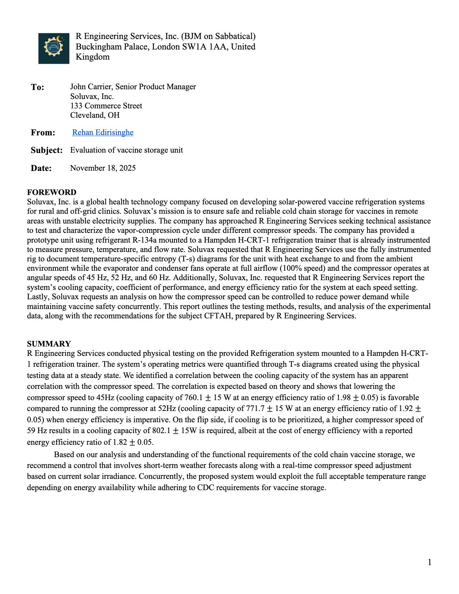
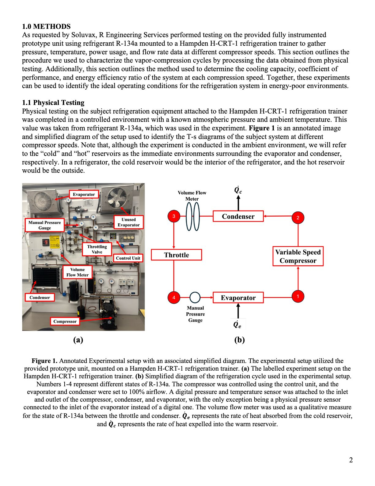
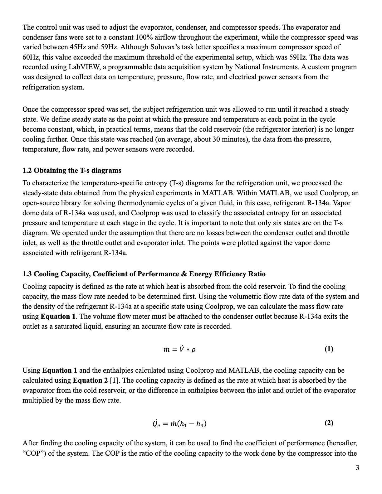
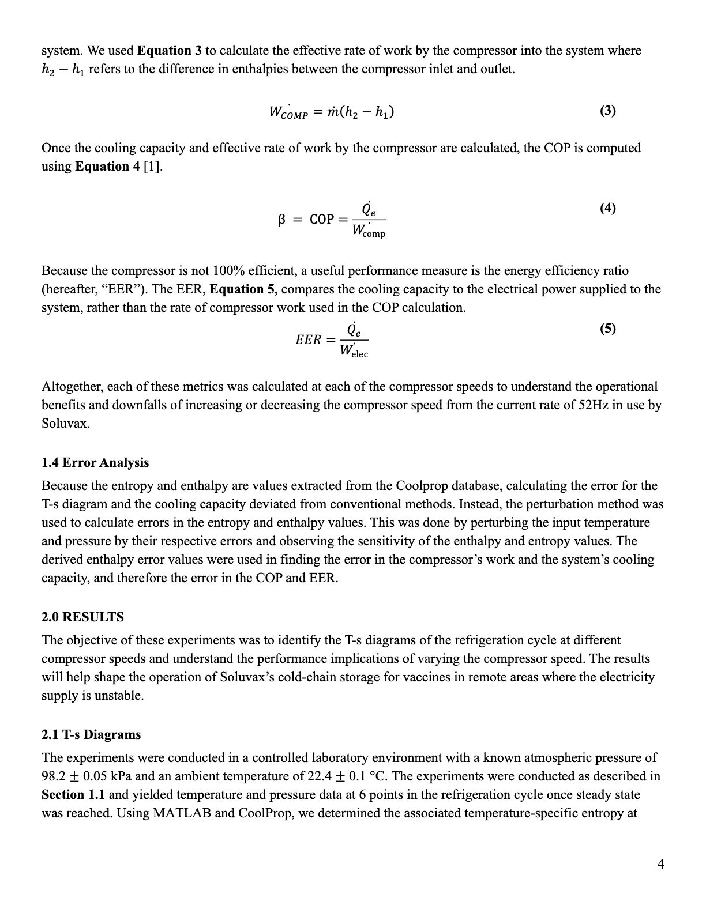
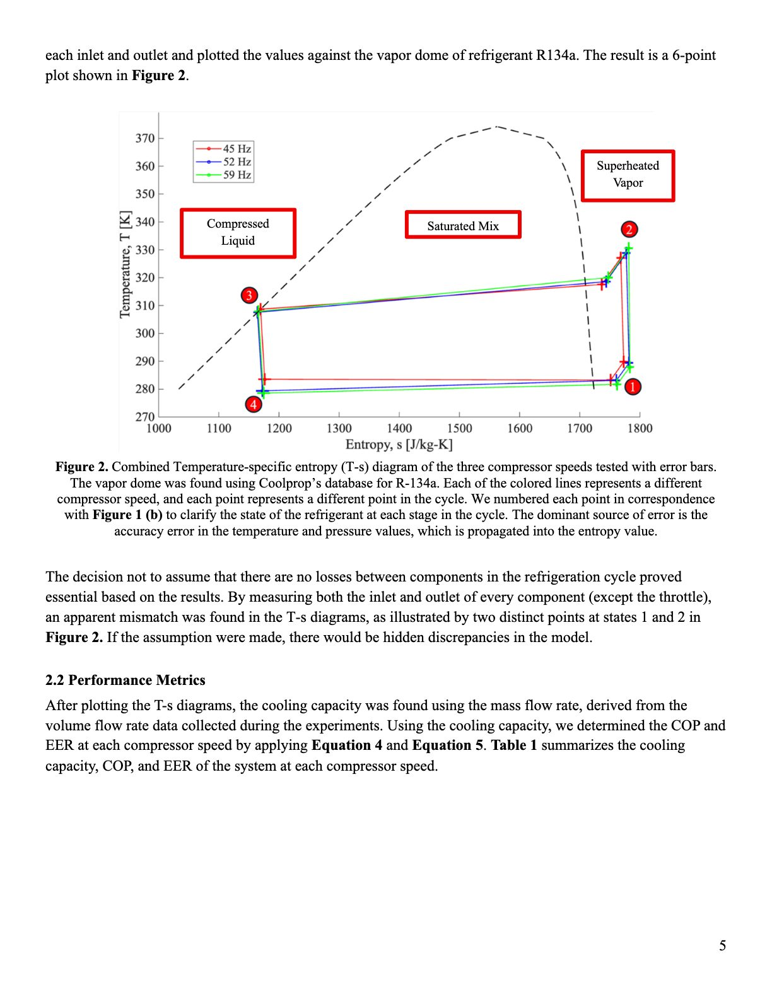
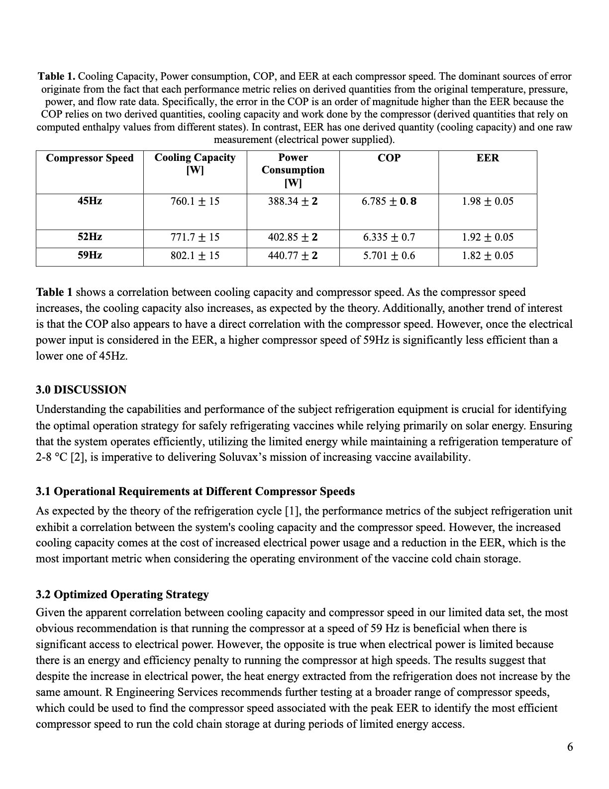
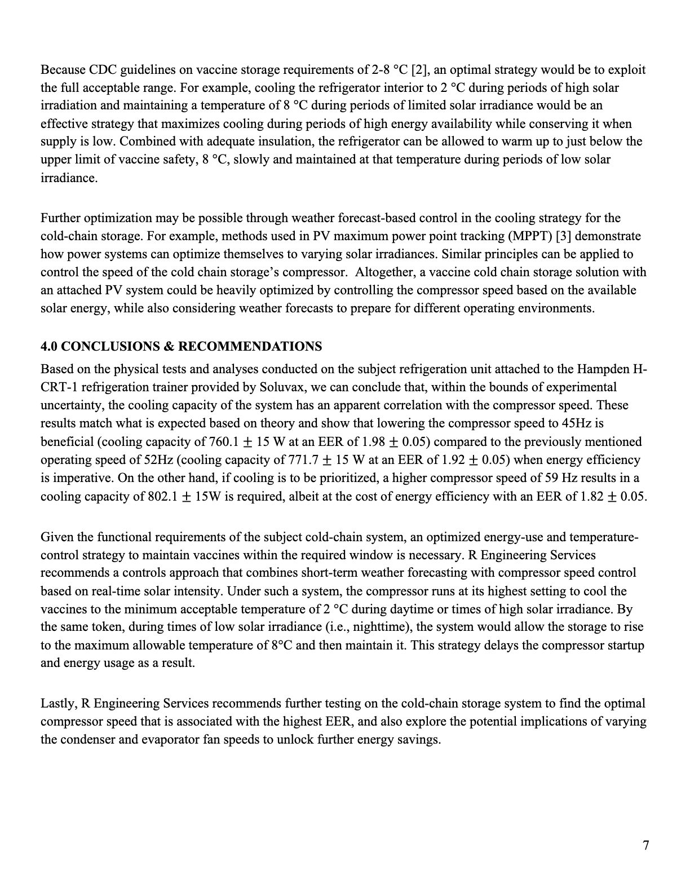
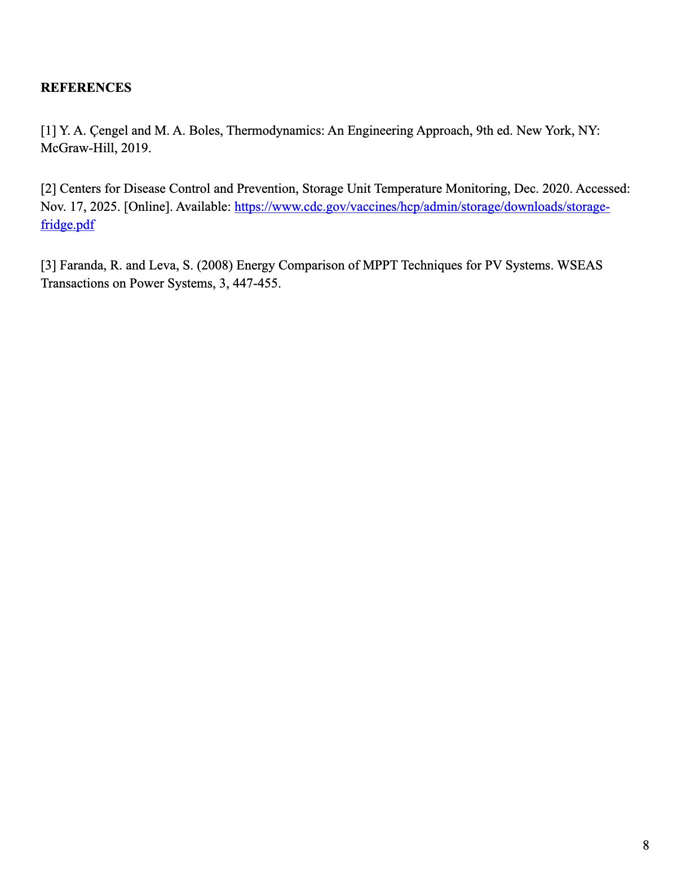

Technical Writing
Writing · Reports, memos, documentation
- My writing has been shaped by MECHENG 395, my research, and two internships at ESi, where I drafted engineering reports.
- That work trained me to write for both technical and non-technical readers: clear findings up front, with the supporting analysis behind them.
- Sample below: a MECHENG 395 lab report written as a consulting memo to a client, evaluating a solar-powered vaccine storage unit.







